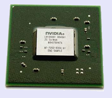
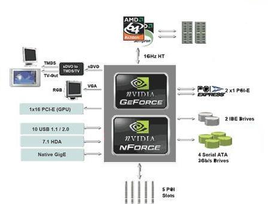

Střední průmyslová škola elektrotechniky a informatiky, Ostrava, příspěvková organizace
Chipsety
výukový modul EPO

Úvod
Co je to Chipset
Chlazení chipsetu
Nejznámější producenti Chipsetů:
Chipsety Intel
Chipsety AMD
Chipsety nVidia
Chipsety SiS
Porovnání chipsetů
Slovníček pojmů
Zadání DMP
Dokumentace
Použité zdroje
Čipová sada nForce 630a:
Severní most s označením GeForce 7050 PV v sobě má inegrovanou grafickou kartu GeForce 7050 PV. Jižní most je označen jako nForce 630a.

Severní most (GeForce 7050 PV):
Procesor:
- AMD Athlon 64 X2, AMD Athlon 64 FX, AMD Athlon 64, AMD Sempron
- Patice AM2
- FSB 1GHz HyperTransport
Typ operační paměti:
- Dual DDR2
- Rychlost operační paměti 533/667/800 MHz
- Maximální velikost operační paměti 8GB
Grafické jádro:
- GeForce 7050 PV
- VGA výstup: 1x D-Sub 15-pin
- DVI výstup: 1x DVI-D
- HDMI výstup: 1x HDMI
Jižní most (nForce 630a):
- 4 SATA porty s přenosem 3Gb/s
- 6 slotů PCI
- 10 USB 2.0
- 7.1 HDA audio
- 2 PATA port
Blokové schéma:

Závěrem (doporučení pro praxi):
Tento čipset neoplývá výraznými parametry, za zmínku určitě stojí celkem výkonná integrovaná grafická karta GeForce 7050 PV. Tuhle přednot určitě radí využijí příznivci LINUXU, dále je dobře využitelný k prácí se softwarem (ku příkladu k práci v AUTOCADU), neztratí uplatnění také jako domácí PC či HTCP.